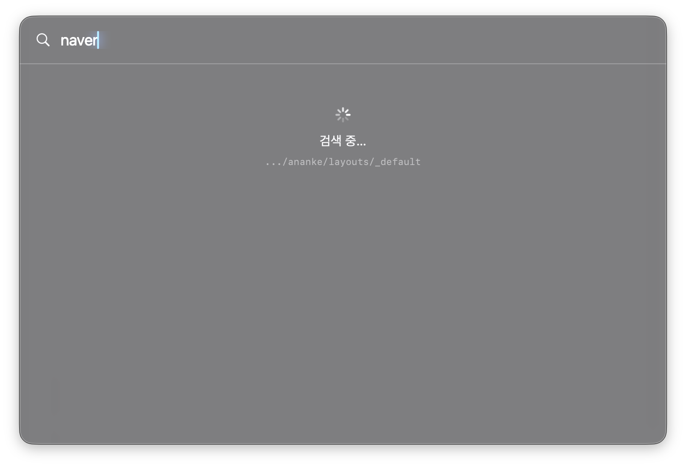

all new finder · 1.5
Finder, reforged.
분할 뷰, 내장 터미널, 커맨드 팔레트.
macOS를 위한 가볍고 빠른 네이티브 파일 브라우저.
Apple 공증 완료 — 바로 실행됩니다. 자동 업데이트는 Homebrew 설치를 권장합니다.
초경량 네이티브 단일 바이너리 · 5.8 MB · 텔레메트리 0 · 오픈소스


Homebrew로 설치.
Homebrew로 설치하면 자동 업데이트까지 됩니다. (위 버튼으로 공증된 .dmg 직접 다운로드도 가능)
brew tap rescenedev/anf
brew trust rescenedev/anf
brew install --cask anf업데이트는 brew upgrade --cask anf.
Apple 공증 완료 — Developer ID로 서명·공증되어 Gatekeeper 경고 없이 바로 실행됩니다.
선택 — 더 빠른 파일명·내용 검색을 위해 fd·ripgrep 설치(없으면 Spotlight로 자동 폴백):
brew install fd ripgrep선택 — HWP/HWPX 전체 서식 미리보기(알한글). 본문 텍스트는 알한글 없이도 anf가 추출합니다:
brew install --cask postmelee/tap/alhangeul한 창에 담은 모든 것.
파일을 다루는 데 필요한 것들을 자연스럽게 모았습니다.
유연한 분할 뷰
단일 · 2분할 좌우 · 상하 2행 · 4분할. 분할선을 드래그해 크기를 조절하고, 창 위치·레이아웃·보기 형태는 따로 저장할 것 없이 그대로 기억됩니다.
커맨드 팔레트
어디서든 ⌘K. 현재 폴더 아래를 fd로 즉시 검색, 내용은 ripgrep으로 — 핀 · 최근 · 즐겨찾기에서 바로 점프합니다.
내장 터미널
창 하단 전역 드로어. 실제 PTY 위에서 동작하며 ⌘± 로 글자 크기를 조절하고, SSH도 한 번에 연결됩니다.
iCloud도 빈틈없이
다운로드되지 않은 placeholder를 구름 배지로 표시하고, 인스펙터에서 선택하면 자동으로 내려받습니다.
인스펙터 미리보기
QuickLook 미리보기와 가독성 좋은 텍스트 뷰어. 텍스트 파일은 ⌘± 로 글자 크기를 조절합니다.
네이티브 사이드바
즐겨찾기 · 핀 · 위치 · SSH 섹션. 섹션 접기·펼치기, ~/.ssh/config 자동 인식, 라이브 SSH 세션 표시까지.
hwpx 본문도 딱
한글 hwpx·docx·pptx·xlsx·pdf 본문 텍스트까지 직접 추출해 ⌘K로 내용 검색. 인스펙터에서도 본문을 바로 미리봅니다. 알한글 없이.
초성 검색
ㄱㅊ만 쳐도 "(경찰청)…" 폴더로 바로 점프 — ⌘K에서도, 폴더에서 그냥 타이핑해도. NFC/NFD 정규화, 한글 IME에서도 듣는 ⌘단축키까지. 한국어에 진심입니다.
Workspace
현재 분할 레이아웃과 탭 구성을 이름 붙여 저장하고, 사이드바에서 한 번에 그 작업 공간으로 되돌아갑니다.
태그 · 정보 가져오기
색깔 태그로 분류하고(Finder와 그대로 호환), ⌘⌥I로 크기·권한·경로·날짜를 한눈에. 폴더 크기는 백그라운드로 계산합니다.
GUI SFTP
SSH 호스트를 일반 폴더처럼 탐색. 터미널도, sshfs·macFUSE 설치도 없이 원격 디렉터리를 바로 브라우징합니다.
왜 빠른가.
속도는 우연이 아니라 설계입니다. 전부 실측한 수치입니다.
| 측정 항목 | 결과 | 비고 |
|---|---|---|
| 26,549개 폴더 벌크 읽기 | 23.8 ms | getattrlistbulk — 옛 Foundation 풀 stat(1,084ms) 대비 46× |
| 26,549개 폴더 진입 (읽기+정렬+렌더) | ~0.1 초 | 첫 진입 기준 |
| 같은 폴더 재진입 | 0 ms | 목록 캐시가 먼저 그리고 변경분만 뒤에서 반영 |
| 한글 이름 26,549개 정렬 | 98 ms | 정수 패킹 비교 — locale 비교(480ms) 대비 5× |
| ⌘K 퍼지 검색 (30만 경로 풀) | ~40 ms | 키 입력당 — 인메모리 인덱스 + 초성 매칭, 스크롤·화살표·정렬 전환은 행 재활용/O(1) 맵으로 항상 즉각 |
| PDF 32개 본문 검색 스윕 | 410 ms → 4 ms | 첫 검색만 추출, 이후 키 입력은 캐시 매칭 |
| 55,860개 항목(622MB) 폴더 복사 | 6.8 초 | 병렬 APFS 클론 — cp -Rc(8.4s)보다 빠름, 전 과정 백그라운드 + 진행률 + 즉시 취소 |
| 디렉토리 150,696개 소크 | 실패 0 | 실제 홈 트리 전체를 읽기+정렬 경로로 순회, kr 외 전부 <55ms |
| 앱 크기 | 5.8 MB | 네이티브 단일 바이너리 — Electron 파일 매니저의 수십분의 1 |
| 메모리 | ~110 MB | 26,549개 폴더 세션 포함, 라이브 힙 ~30 MB — 썸네일·목록 캐시 모두 바이트 상한 |
| 유휴 CPU | ~0 % | 인덱스는 필요할 때만 갱신 |
Apple M4 Pro · macOS 26 · 로컬 APFS 기준 — 네트워크 볼륨(SMB/NAS)은 회선 속도에 따릅니다. 측정 하니스·기준선·재현 방법은 PERFORMANCE.md와 TESTING.md에 공개되어 있습니다.
네이티브, Electron 없음
Swift + AppKit으로 시스템 프레임워크를 직접 씁니다. 브라우저 런타임이 없어 시작이 빠르고 메모리가 가볍습니다.
fd · ripgrep 백그라운드 검색
파일명은 fd로 포커스된 폴더 하위를 백그라운드 인덱싱(인메모리 필터링), 내용은 ripgrep으로 검색합니다 — 키 입력마다 디스크를 훑지 않고, 인덱스는 checkpoint로 저장돼 재시작해도 즉시 이어집니다.
내장 퍼지 매칭
fzf 같은 외부 프로세스 없이 퍼지 랭킹을 Swift로 직접 구현했습니다. 메인 스레드 밖에서 돌려 타이핑이 끊기지 않습니다.
SwiftUI가 아닌 AppKit 컨트롤러
커맨드 팔레트는 NSPanel + NSTableView를 직접 다루는 컨트롤러로 만들었습니다. SwiftUI에서 잡히지 않던 키보드 포커스·성능 문제를 네이티브로 해결했습니다.
어떤 폴더든 눈 깜짝할 새
폴더 진입은 getattrlistbulk(2) 네이티브 벌크 읽기 — 항목별 stat 없이 이름·종류·크기·날짜를 몇 번의 시스템 콜로 한 번에. 보통 폴더는 0.01초, 2만 6천 개짜리도 0.1초에 촥 뜹니다.
네이티브 NSTableView 렌더링
파일 목록은 SwiftUI가 아니라 NSTableView로 직접 그립니다. 화면에 보이는 행만 재활용해, 수만 개 항목도 스크롤·정렬·화살표 이동이 즉각적입니다.
디바운스 · 타임아웃
검색은 130ms 디바운스로 불필요한 작업을 막고, 내용 검색(ripgrep)은 3초 타임아웃·대용량 파일 스킵으로 절대 멈추지 않습니다.
바이브코딩이지만, 성능은 역대급
26,549개 폴더 진입 ~0.1초 · 재방문 0ms · 26k 한글 이름 정렬 98ms · 유휴 CPU ~0%. 이렇게 검증합니다: 유닛·통합 124개(키보드 선택·정렬·초성 매칭·undo 안전망), 합성 이벤트 UI 테스트(분할 드래그·페이지 키를 실제 이벤트 경로로), 15만 개 디렉토리 소크(~/work 전체를 실제 읽기+정렬 경로로 순회, 무실패), 벤치 기준선(폴더 진입·PDF 본문 스윕 — 느려지면 테스트가 먼저 압니다). 전부 저장소에 공개되어 있고 push마다 CI가 돕니다.
창을 떠나지 않는 터미널.
창 하단에서 바로 열리는 내장 터미널 — xterm.js 렌더링을 실제 PTY에 직접 연결했습니다.

- 열면 창 높이의 약 1/3 — 드래그로 크기 조절
- ⌃` 토글 · ⌘+ / ⌘− 폰트 크기
- 사이드바 SSH 클릭으로 바로 접속, 라이브 연결 표시
⌘K, 타이핑하는 즉시.
순수 AppKit 커맨드 팔레트. 어디서든 ⌘K — 글자를 치는 순간 결과가 좌라락 쏟아집니다.




- 빈 상태: 핀 → 최근 방문 → 즐겨찾기 순
- 파일명은 fd로 현재 폴더 이하를 즉시 검색 (내장 퍼지 랭킹)
- 초성만 쳐도 매칭 — ㄱㅊ → (경찰청)…, 타이핑할수록 좁혀짐
- 내용 일치는 ripgrep으로 따로 구분해서 표시 — hwpx·docx 본문까지
- 폴더는 이동, 파일은 위치로 점프해 선택
손은 키보드에.
자주 쓰는 동작은 모두 단축키로.
검색은 fd + ripgrep으로.
파일명은 fd로 즉시, 내용은 ripgrep으로. 퍼지 랭킹은 내장 — 설치는 위 설치 섹션에서 안내합니다.
fd
현재 폴더 이하 파일명을 초고속으로 검색.
ripgrep
커맨드 팔레트에서 파일 내용까지 검색.
알한글 ↗
HWP/HWPX 본문 텍스트는 anf가 직접 추출해 보여줍니다. 알한글은 서식까지 포함한 전체 QuickLook 미리보기용(선택).
퍼지 랭킹은 anf에 내장. fd·ripgrep이 없으면 macOS Spotlight(mdfind)으로 자동 폴백하니 설치 없이도 검색됩니다. 알한글은 한글 미리보기용입니다.
오픈소스 위에서.
anf는 이 프로젝트들 위에 서 있습니다. 감사드립니다.
내장 터미널의 화면 렌더링. v5.3.0 번들.
창·뷰·미리보기를 구성하는 시스템 프레임워크.
가상 터미널을 fork/exec 하는 작은 C 헬퍼.
믿고 맡길 수 있게.
파일은 잃어버리면 끝입니다. 그래서 안전을 기능이 아니라 토대로 깔았습니다.
되돌릴 수 있는 파일 작업
이동·이름변경·복사·휴지통 모두 ⌘Z로 취소. 덮어쓰기는 기존 파일을 지우지 않고 휴지통으로 보내 복구 가능, 이름 충돌은 묻고 진행합니다.
테스트가 지킵니다
유닛·통합 147개 + 합성 이벤트 UI 테스트 + 15만 디렉토리 소크. push마다 CI가 돌고, 버그 신고는 그 입력 그대로 회귀 테스트로 박제됩니다.
누수·크래시 감사
창을 수십 번 열고 닫으며 heap·leaks로 메모리를 검증합니다. 이벤트 모니터·옵저버·윈도우 수명까지 추적해 새는 곳을 막았습니다.
절대 멈추지 않게
대용량 읽기·정렬·복사·검색은 전부 백그라운드. 메인 스레드 100ms 정지 감지기로 버벅임을 수치로 잡고, 비치볼이 날 자리를 미리 막았습니다.
방법론 전체는 METHODOLOGY.md, 테스트 시나리오는 TESTING.md에 공개되어 있습니다.
지운 파일도 되돌아옵니다.
폴더를 Vault로 보호하세요. 실수로 지우고 휴지통까지 비워도, 시간을 거슬러 그대로 복구합니다.
우클릭 한 번으로 보호
폴더를 Vault로 지정하면 끝. 이후 5분마다 백그라운드에서 조용히 스냅샷을 찍습니다. 유휴 CPU ~0%, Git이 도는 줄도 모릅니다.
휴지통을 비워도 안전
macOS 휴지통을 비워도, 외부에서 강제 삭제해도 데이터는 Vault 안에 격리되어 살아남습니다. 클라우드 의존성 0 — 전부 내 Mac에만.
타임라인에서 원클릭 복구
"Vault 타임라인"을 열어 원하는 시점을 고르고, 사라진 파일을 클릭 한 번으로 되살립니다. 버전별로 어떤 시점이든.
- 로컬 git 엔진 기반 — 새 의존성 0
- 개발 프로젝트(이미 .git 있는 폴더)는
.anf_vault로 격리해 기존 저장소를 절대 건드리지 않음 - 50MB 이상 대용량 바이너리는 자동 우회 격리로 저장소 비대화 차단
온디바이스 AI, 켜면 보입니다.
원할 때만, 원하는 모델로. 기본은 꺼짐.
요약 & 질문
파일·폴더를 2~3문장으로 요약(PDF·문서·이미지 폴더까지). 문서나 폴더에 자연어로 묻고 근거 기반으로 답을 받습니다.
이미지 검색
⌘K에서 “강아지”, “영수증”처럼 사진의 내용으로 검색. 이미지 속 텍스트(OCR)까지 찾습니다 — 1만 장도 끄떡없이.
이름·태그·정리
내용을 보고 파일명 제안, 토픽 태그 자동 부여(Finder 태그). 폴더를 종류별·내용별로 정리하고, 흩어진 스크린샷도 한 번에.
- 백엔드는 auto — Anthropic 키가 있으면 Claude, 없으면 로컬 LLM(Ollama·LM Studio), 그것도 없으면 Apple 온디바이스. Claude는 클라우드(내용 전송)·1M 토큰이라 폴더 통째로도 OK, Apple·로컬은 기기 밖으로 안 나갑니다
- Apple·로컬 경로는 모델 번들·네트워크 호출 0 — “수집 0” 약속 그대로. 이미지 검색·OCR·스크린샷/종류별 정리는 macOS 26 이하에서도 동작
- 베타입니다: 결과 품질은 연결한 모델 수준에 따라 다를 수 있어요
설정 한 번이면 끝 — AI 설정 가이드. anf에서 ⌘K에 /를 쳐도 바로 시작할 수 있어요.
API 키는 macOS 키체인에 안전하게 보관됩니다 — 평문으로 저장하지 않고, 보낼 서버도 없습니다 (anf엔 서버 자체가 없으니까요).
아무것도 수집하지 않습니다.
프라이버시는 기능이 아니라 기본값입니다. 전부 코드로 검증할 수 있습니다 — 오픈소스니까요.
텔레메트리 제로
사용 통계도, 크래시 리포트도, 분석 도구도, 광고 식별자도 없습니다. 계정 가입조차 없습니다. 수집하는 것이 없으니 제3자에게 줄 것도 없습니다.
네트워크 요청은 단 하나
하루 1회 GitHub에 새 버전이 있는지 묻는 것이 전부 — 어떤 사용자 데이터도 싣지 않고, 오프라인이면 조용히 건너뜁니다.
모든 데이터는 내 Mac에
설정·검색 인덱스·캐시 전부 로컬에만 저장됩니다. brew uninstall --zap --cask anf 한 줄이면 흔적까지 정리됩니다.
비밀번호를 모릅니다
SSH/SFTP는 키·에이전트 인증만 사용합니다 — 비밀번호를 입력받지도, 저장하지도 않습니다. 진단 로그도 기본 꺼짐(옵트인)입니다.
API 키는 키체인에
Anthropic API 키는 설정 파일이나 어디에도 절대 평문으로 저장하지 않습니다 — macOS 키체인(Keychain Access)에만 보관합니다. AI 메뉴에서 키를 입력하면 키체인에 안전하게 저장됩니다.
자세한 내용은 개인정보처리방침 — 한 페이지면 충분할 만큼 짧습니다.
릴리즈 노트.
이미 설치했다면 brew upgrade --cask anf 한 줄로 최신 버전으로 업데이트하세요.
v1.5 — 온디바이스 AI(요약·질문·이름 제안·자동 태그·정리·이미지 검색)와 리스트 인라인 트리가 도착했습니다.
v1.5.11–1.5.19 — macOS 파인더식 탭 바, 이름 자연 정렬(1·2·…·10·11), App 메뉴 ‘업데이트 확인…’, 터미널 ⌃`로 현재 폴더 셸 열기(SSH 탭에서도), 파일 작업 후 결과 항목에 포커스 유지 + 즐겨찾기 경로 정리, Enter는 선택 항목 이름 변경·..행에서 Return은 상위 폴더로, 터미널 CJK 폰트, 팔레트·상태바 키 입력 성능 개선, 공증 .dmg(드래그 설치)로 배포.
v1.5.10 — Apple 공증: Developer ID 서명 + 공증으로 첫 실행 시 Gatekeeper 경고 없이 바로 열립니다.
v1.5.5–1.5.9 — 윈도 커맨더식 상위폴더 .. 행, 탭 폴더 고정(★), 경로바 인라인 편집(⌘L), Delete 키(⌦)로 삭제, 탭 전환 시 리스트 갱신, 삭제 확인창 Enter, 컬럼 너비 유지, 이단 분할 비율(%) 표시, 네트워크·Vault 안정화.
v1.5.4 — 최근 항목·스마트 폴더(사이드바 가상 위치), 정렬 그룹 머리글(리스트·아이콘 보기), Anthropic API 키는 macOS 키체인에 저장(AI 메뉴에서 입력, 평문 자동 이전). 네트워크 드라이브 재연결·리스트 드래그&드롭 이동·“폴더로 이동” 안정화.
v1.5.0 — AI 기능(켜기 옵션): 요약·Q&A·스마트 이름·자동 태그·종류/내용별 정리·이미지 검색. 백엔드는 Claude·로컬(Ollama/LM Studio)·Apple 온디바이스 중 선택. ⌘K에서 /로 바로 질문. 리스트 모드 폴더 인라인 펼치기, ⌘? 단축키·F4 지정앱 열기·ESC로 패널 닫기, 핀·워크스페이스 JSON 이주.
v1.0.3 — 분할 상태에서 사이드바 즐겨찾기 클릭 시 포커스 패널만 이동(기존: 양쪽 패널 변경).
v1.0.2 — macOS 14+ (Sonoma · Sequoia) 지원. macOS 26 전용이던 태그 쓰기 API를 이전 버전 호환 방식으로 교체.
v1.0.1 — 터미널/SSH 크래시 수정(리소스 번들 누락), ⌘1–4 분할 전환 가속(188ms → 31–54ms), Vault 우클릭 진입 확대.
속도
getattrlistbulk(2)벌크 읽기로 2만 6천 개 폴더도 ~0.1초 진입, 재방문은 0ms- 리스트·아이콘·사이드바 전부 네이티브 AppKit — 수만 개도 즉각 스크롤·정렬
- 유휴 CPU ~0%, 썸네일 생성 상한·사이드바 무재구축으로 스크롤·탐색 가속
검색
- ⌘K 팔레트 — 파일명은 fd + 내장 퍼지 랭킹, 내용은 ripgrep (없으면 Spotlight로 자동 폴백)
- 초성 검색 ㄱㅇㅇ → 금융위원회, hwpx·docx·pdf 본문 검색(알한글 불필요)
- NFC/NFD 정규화 일치, 팔레트에서 SSH 호스트·Workspace 바로 점프
창 · 키보드
- 멀티윈도우(⌘N) · 단일/2분할/4분할 · 이름 붙여 저장하는 Workspace
- 타입어헤드, Shift+화살표 블록 선택, PgUp/PgDn 페이지 이동, F5/F6 패널 간 복사·이동
- 한글 IME에서도 동작하는 ⌘ 단축키, 첫 실행 단축키 카드
파일 작업
- 압축 풀기 zip·7z·tar.gz·cpio 등 추가 설치 없이(rar·alz는 unar), zip 압축
- ⌘Z 되돌리기(이동·이름변경·휴지통), 충돌 다이얼로그, cp보다 빠른 백그라운드 복사
- 정보 가져오기(⌘⌥I)·색깔 태그(Finder 호환), 상태바에 항목 수·여유 공간
원격 · 프라이버시
- GUI SFTP — SSH 호스트를 일반 폴더처럼(sshfs 불필요), 내장 터미널(실제 PTY, 다중 탭)
- ~/.ssh/config 자동 인식, 비밀번호 입력·저장 없음(키/에이전트 인증)
- 텔레메트리 0 — 네트워크 요청은 하루 1회 버전 확인뿐, 한/영 UI, MIT 오픈소스
Vault
- Vault — 폴더를 보호하면 휴지통 비운 파일도 타임라인에서 복구
- 5분마다 백그라운드 자동 스냅샷, 클라우드 없이 로컬에만
- 로컬 git 기반 — 새 의존성 0, 개발 폴더는 .anf_vault로 격리
마음에 드셨나요?
아이디어·개선 의견·버그 제보는 GitHub 이슈 또는 tellme@duck.com.